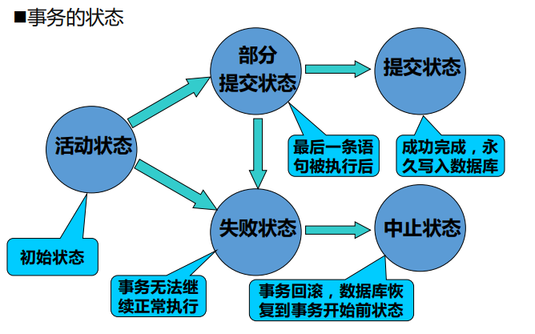

当多个用户同时存取、修改DB中的数据时，可能会发生相互干扰，使DB中数据的完整性受到破坏，而导致数据不一致，数据库不可用。
数据的一致性：在任何时刻用户面对的数据库都是符合现实世界的语义逻辑的。
数据库的并发控制是以事务为基本单位进行的，通过对事务所操作的数据施加封锁来实现一致性。
事务
事务(Transaction)是用户定义的一个数据库操作序列，这些操作要么全做，要么全不做，是一个不可分割的工作单位。
用户自定义的事务以SQL语句Begin transaction开始，以Commit 或 Rollback 结束。
- COMMIT表示事务的提交，即将事务中所有对数据库的更新写回到磁盘上的物理数据库中去，此时事务正常结束；
- ROLLBACK表示事务的回滚，即在事务运行的过程中发生了某种故障，事务不能继续执行，系统将事务中对数据库的所有已完成的更新操作全部撤销，再回滚到事务开始时的状态。
特征
为了保护数据的完整性，一般要求事务具有ACID四个特征。
- 原子性(Atomicity)：事务中包含的所有操作要么全做，要么全不做。系统应保证只执行了一部分的事务不会对数据库状态产生影响。
- 隔离性(Isolation)：并发执行的各个事务之间不能互相干扰；一个事务内部的操作及使用的数据对其他并发事务是隔离的；每个事务在执行的时候应感觉不到其它事务的存在。
- 一致性(Consistency)：事务的隔离执行必须保证数据库的一致性。假定事务的一致性规定是正确的，则数据库在事务执行前是一致的，执行过程中可能暂时出现不一致，而当事务执行完后，数据库仍会处于一致性状态。
- 持久性(Durability)：一个事务一旦提交之后，它对数据库的影响必须是永久的。系统发生失效不能改变事务的持久性。
执行状态
- 活动状态（Active） – 是事务的初始状态；事务在执行的时候处于这种状态
- 部分提交状态（Partially committed） – 对数据库进行了部分更新，但事务并未最后结束的状态
- 失败状态（Failed) – 由于物理或逻辑错误导致事务语句无法进行下去的状态
- 中止状态（Aborted） – 事务回滚所有操作，数据库恢复到务开始之前的状态
- 提交状态（Committed） – 事务正确执行完成的状态

并发控制机制
并发操作会带来以下造成数据不一致性的情况：
- 丢失修改(lost update)：丢失修改是指事务1与事务2从数据库中读入同一数据并修改，事务2的提交结果破坏了事务1提交的结果，导致事务1的修改被丢失。
- 不可重复读(non-repeatable read)：不可重复读是指事务1读取数据后，事务2执行更新操作，使事务1无法再现前一次读取结果。
- 读“脏”数据(dirty read)：事务1修改某一数据，并将其写回磁盘。事务2读取同一数据后，事务1由于某种原因被撤消，这时事务1已修改过的数据恢复原值，事务2读到的数据就与数据库中的数据不一致，是不正确的数据，又称为“脏”数据。
对此有以下应对手段：
调度(Schedule)
调度是并发运行的事务中各条指令的执行序列。
几个事务的并行执行是正确的，当且仅当其结果与按某一次序串行地执行它们时的结果相同。这种并行调度策略称为可串行化(Serializable)的调度。
可串行化是并行事务正确性的唯一准则。
锁(Lock)
- 排它锁(Exclusive Lock)，又称写锁、X锁。若事务T对数据对象A加上X锁，则只允许T读取和修改A，其它任何事务都不能再对A加任何类型的锁，直到T释放A上的锁。
- 共享锁(Share Lock)，又称读锁、S锁。若事务T对数据对象A加上S锁，则其它事务只能再对A加S锁，而不能加X锁，直到T释放A上的S锁。这就保证了其他事务在T释放R上的S锁之前，只能读取R，而不能再对R作任何修改。
作业
注意：习题中的内容与笔记有许多地方是完全重合的。
习题10.1
试述事务的概念及事务的4个特性。恢复技术能保证事务的哪些特性？
事务是用户定义的一个数据库操作序列，这些操作要么全做、要么全不做，是一个不可分割的工作单位。
事务的ACID特性：
- 原子性(Atomicity)：事务中包含的所有操作要么全做，要么全不做。系统应保证只执行了一部分的事务不会对数据库状态产生影响。
- 隔离性(Isolation)：并发执行的各个事务之间不能互相干扰；一个事务内部的操作及使用的数据对其他并发事务是隔离的；每个事务在执行的时候应感觉不到其它事务的存在。
- 一致性(Consistency)：事务的隔离执行必须保证数据库的一致性。假定事务的一致性规定是正确的，则数据库在事务执行前是一致的，执行过程中可能暂时出现不一致，而当事务执行完后，数据库仍会处于一致性状态。
- 持久性(Durability)：一个事务一旦提交之后，它对数据库的影响必须是永久的。系统发生失效不能改变事务的持久性。
故障恢复可以保证事务的原子性与持续性。
习题10.2
为什么事务非正常结束时会影响数据库数据的正确性，请举例说明之。
如果数据库系统运行中发生故障，有些事务尚未完成就被迫中断，这些为完成事务对数据库所做的修改有一部分已写入物理数据库，这是数据库就可能处于不正确的状态，或者说是不一致的状态。
习题11.1
在数据库中为什么要并发控制？并发控制技术能保证事务的哪些特性？
并发操作会带来造成数据不一致性的情况，破坏数据库的一致性。所以数据库管理系统必须提供并发控制机制。
并发控制可以保证事务的一致性和隔离性。
习题11.2
并发操作可能会产生哪几类数据不一致？用什么方法能避免各种不一致的情况？
- 丢失修改(lost update)：丢失修改是指事务1与事务2从数据库中读入同一数据并修改，事务2的提交结果破坏了事务1提交的结果，导致事务1的修改被丢失。
- 不可重复读(non-repeatable read)：不可重复读是指事务1读取数据后，事务2执行更新操作，使事务1无法再现前一次读取结果。
- 读“脏”数据(dirty read)：事务1修改某一数据，并将其写回磁盘。事务2读取同一数据后，事务1由于某种原因被撤消，这时事务1已修改过的数据恢复原值，事务2读到的数据就与数据库中的数据不一致，是不正确的数据，又称为“脏”数据。
避免数据不一致的方法就是并发控制。常用的并发控制技术包括封锁方法、时间戳方法、乐观控制方法和多版本并发控制方法等。
习题11.3
什么是封锁？基本的封锁类型有几种？试述它们的含义。
封锁就是事务T在对某个数据对象操作之前，先向系统发出请求，对其加锁。在事务T释放它的锁之前，其他的事务不能更新或读取此数据对象。
基本的封锁类型有两种：
- 排它锁(Exclusive Lock)，又称写锁、X锁。若事务T对数据对象A加上X锁，则只允许T读取和修改A，其它任何事务都不能再对A加任何类型的锁，直到T释放A上的锁。
- 共享锁(Share Lock)，又称读锁、S锁。若事务T对数据对象A加上S锁，则其它事务只能再对A加S锁，而不能加X锁，直到T释放A上的S锁。这就保证了其他事务在T释放R上的S锁之前，只能读取R，而不能再对R作任何修改。
习题11.4
如何用封锁机制保证数据的一致性？
加锁后事务就能对数据对象有一定的控制，DBMS按照一定的封锁协议对并发操作进行控制，使得多个并发操作有序地执行，就可以避免丢失修改、不可重复读和读“脏”数据等数据不一致性。
习题11.6
什么是死锁？请给出预防死锁的若干方法。
习题11.7
请给出检测死锁发生的一种方法，当发生死锁后如何解除死锁？
习题11.8
什么样的并发调度是正确的调度？
习题11.9
设T1、T2、T3是如下的三个事务，设A的初值为0。
$$
T1:A:=A+2;
$$$$
T2: A:=A*2;
$$$$
T3: A:=A**2;
$$(1) 若这三个事务允许并发执行，则有多少种可能的正确结果？请一一列举出来。
(2) 请给出一个可串行化的调度，并给出执行结果。
(3) 请给出一个非串行化的调度，并给出执行结果。
(4) 若这三个事务都遵守两段锁协议，请给出一个不产生死锁的可串行化调度。
(5) 若这三个事务都遵守两段锁协议，请给出一个产生死锁的调度。
习题11.10
今有三个事务的一个调度
$$
r_3(B)r_1(A)w_3(B)r_2(B)w_2(B)r_1(B)w_1(A)
$$
该调度是冲突可串行化的调度吗？为什么？
习题11.12
举例说明对并发事务的一个调度是可串行化的，而这些并发事务不一定遵守两段锁协议。
习题11.13
考虑如下的调度，说明这些调度集合之间的包含关系。
(1) 正确的调度。
(2) 可串行化的调度。
(3) 遵循两阶段封锁(2PL)的调度。
(4) 串行调度。
习题11.14
考虑T1和T2两个事务。
$$
T_1: R(A);R(B);B=A+B;W(B)
$$$$
T2:R(B);R(A);A=A+B;W(A)
$$(1) 改写T1和T2，增加加锁操作和解锁操作，并要求遵循
(2) 说明T1和T2的执行是否会引起死锁，给出T1和T2的一个调度并说明之。
如果您喜欢此博客或发现它对您有用，则欢迎对此发表评论。 也欢迎您共享此博客，以便更多人可以参与。 如果博客中使用的图像侵犯了您的版权，请与作者联系以将其删除。 谢谢 ！